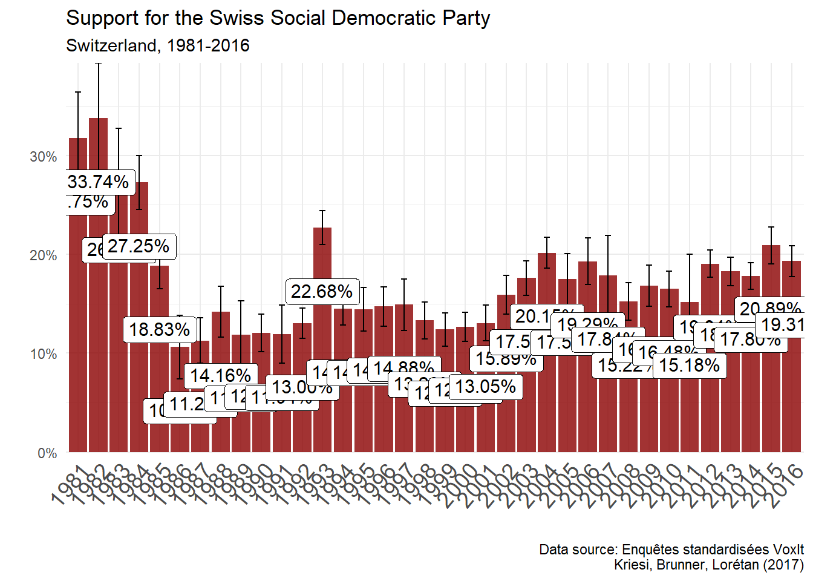
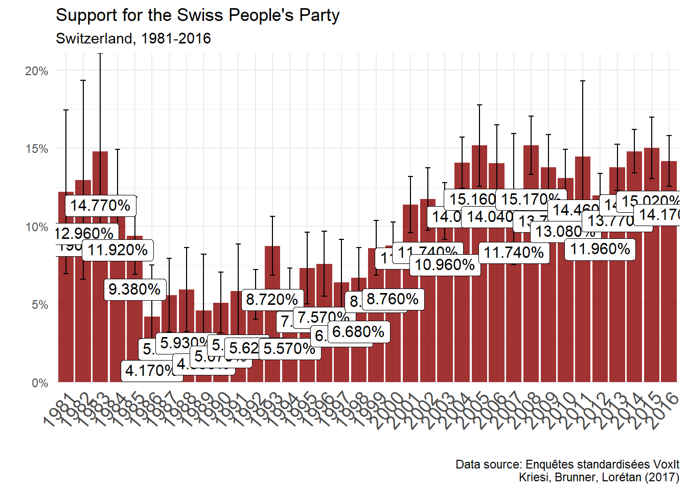

#creating dummy for support/identification for left party (PSS) and udc
vox$pss <- if_else(vox$p02 == 12, 1,
if_else(is.na(vox$p02), NA, 0))
vox$udc <- if_else(vox$p02 == 13, 1,
if_else(is.na(vox$p02), NA, 0))Model:
\(P(support = left) = Logit^{-1}(\beta_{0} + \beta_{1}D_{I} + \beta_{2}Educ + \epsilon)\)
# descriptive statistics
# dependent variable: support for the left (pss)
vox %>%
group_by(annee) %>%
count(pss) %>%
drop_na() %>%
mutate(prop = n/sum(n),
n_sample = sum(n)) %>%
ungroup() %>%
filter(pss == 1) %>%
mutate(se = sqrt(prop*(1-prop)/n),
lower = prop - qnorm(.975)*se,
upper = prop + qnorm(.975)*se) -> table_support_pss
vox %>%
group_by(annee) %>%
count(udc) %>%
drop_na() %>%
mutate(prop = n/sum(n),
n_sample = sum(n)) %>%
ungroup() %>%
filter(udc == 1) %>%
mutate(se = sqrt(prop*(1-prop)/n),
lower = prop - qnorm(.975)*se,
upper = prop + qnorm(.975)*se) -> table_support_udc
table_support_pss %>%
ggplot()+
aes(x = factor(annee), y = prop, label = scales::percent(round(prop, 4)))+
geom_col(fill = "darkred", alpha = 0.8)+
scale_y_continuous(labels = scales::percent_format(accuracy = 1), expand = c(0, 0))+
geom_errorbar(aes(ymin = lower, ymax = upper), width = 0.3, position = position_dodge(width = .9))+
geom_label(position = position_dodge(width = 1), # move to center of bars
vjust = 3, # nudge above top of bar
size = 4)+
theme_minimal()+
theme(axis.text.x = element_text(angle = 50, vjust = 1, hjust=1, size = 14))+
xlab("")+
ylab("")+
labs(title = "Support for the Swiss Social Democratic Party",
subtitle = "Switzerland, 1981-2016",
caption = "Data source: Enquêtes standardisées VoxIt
Kriesi, Brunner, Lorétan (2017)")
table_support_udc %>%
ggplot()+
aes(x = factor(annee), y = prop, label = scales::percent(round(prop, 4)))+
geom_col(fill = "darkred", alpha = 0.8)+
scale_y_continuous(labels = scales::percent_format(accuracy = 1), expand = c(0, 0))+
geom_errorbar(aes(ymin = lower, ymax = upper), width = 0.3, position = position_dodge(width = .9))+
geom_label(position = position_dodge(width = 1), # move to center of bars
vjust = 3, # nudge above top of bar
size = 4)+
theme_minimal()+
theme(axis.text.x = element_text(angle = 50, vjust = 1, hjust=1, size = 14))+
xlab("")+
ylab("")+
labs(title = "Support for the Swiss People's Party",
subtitle = "Switzerland, 1981-2016",
caption = "Data source: Enquêtes standardisées VoxIt
Kriesi, Brunner, Lorétan (2017)")
## independent variables: income group and education
vox %>%
count(educ) %>%
mutate(prop = n/sum(n)) %>%
mutate(label = as_character(educ)) %>%
gt(caption = "Education level")| educ | n | prop | label |
|---|---|---|---|
| 1 | 44007 | 0.137437265 | Ecole obligatoire |
| 2 | 147792 | 0.461565849 | Apprentissage |
| 3 | 29759 | 0.092939659 | Maturité + école normale |
| 4 | 31534 | 0.098483121 | Formation prof. supérieure |
| 5 | 16599 | 0.051839961 | Haute école spécialisée |
| 6 | 47681 | 0.148911451 | Université + Polytechnique |
| NA | 2825 | 0.008822694 | NA |
vox %>%
filter(annee %in% c(1981:1993)) %>%
count(nivmena) %>%
mutate(prop = n/sum(n)) %>%
mutate(label = as_character(nivmena)) %>%
gt(caption = "Houshold income: 1981-1993")| nivmena | n | prop | label |
|---|---|---|---|
| 1 | 5515 | 0.06560556 | Elevé |
| 2 | 19126 | 0.22751984 | Moyen supérieur |
| 3 | 35285 | 0.41974472 | Moyen inférieur |
| 4 | 9292 | 0.11053615 | Bas |
| NA | 14845 | 0.17659375 | NA |
vox %>%
filter(annee %in% c(1993:2016)) %>%
count(revenu) %>%
mutate(prop = n/sum(n)) %>%
mutate(label = as_character(revenu)) %>%
gt(caption = "Revenue: 1993:2016")| revenu | n | prop | label |
|---|---|---|---|
| 1 | 23419 | 0.09283823 | 3'000.- CHF et moins |
| 2 | 51879 | 0.20566012 | de 3'001 à 5'000.- CHF |
| 3 | 53038 | 0.21025466 | de 5'001 à 7'000.- CHF |
| 4 | 34683 | 0.13749128 | de 7'001 à 9'000.- CHF |
| 5 | 35171 | 0.13942582 | 9'001.- CHF et plus |
| 8 | 13940 | 0.05526132 | nsp |
| NA | 40126 | 0.15906857 | NA |
The dataset contains two variables related to income: nivmena and revenu. Nivmena is the income/standard of living variable for the years 1981-1993, then the variable changes to revenue (1993-2016). Nivmena is coded as household standard of living == either “low” (4), “lower middle” (2), “upper middle” (3) and “high” 4 whereas revenue refers directly to income group level with 4 income groups. My decision is to create a new variable from these two variables. The categories will be based on the first variable (low-lower middle-upper middle - high). To do so, an important choice has to be made regarding the two groups from variable revenu that will be merged together. I choose to merge income group 3 (5001-7000CHF) and 4 (7001-9000CHF) into the “upper-middle” category.
vox$income <- ifelse(is.na(vox$revenu) & vox$nivmena == 4, 1,
ifelse(is.na(vox$revenu) & vox$nivmena == 3, 2,
ifelse(is.na(vox$revenu) & vox$nivmena == 2, 3,
ifelse(is.na(vox$revenu) & vox$nivmena == 1, 4,
ifelse(is.na(vox$nivmena) & vox$revenu == 1, 1,
ifelse(is.na(vox$nivmena) & vox$revenu == 2, 2,
ifelse(is.na(vox$nivmena) & vox$revenu %in% c(3,4), 3,
ifelse(is.na(vox$nivmena) & vox$revenu == 5, 4, NA))))))))
vox$income <- set_labels(vox$income, labels = c("low" = 1, "lower middle" = 2, "upper middle" = 3, "high" = 4, "NA" = NA))# recoding other variables
vox$gender <- ifelse(vox$sexe == 1, 0,
ifelse(vox$sexe == 2, 1,
ifelse(is.na(vox$sexe), NA, NA)))
vox$urb <- ifelse(vox$vilcamp == 1, 1,
ifelse(vox$vilcamp == 2, 0,
ifelse(is.na(vox$vilcamp), NA, NA)))
vox$d_inc_high <- ifelse(vox$income == 4, 1,
ifelse(is.na(vox$income), NA, 0))Now that we have coded ou dependent and independent variables, we can start running regressions
Let’s start with the most basic regression possible. Ignoring income, I just regress a binary logit model with education and income pooling all years together: